Ⅱ イタリア／ローマ （8月17日～18日）
②ローマの共和国広場（Piazza della Repubblica）
翌17日朝早く、お湯をもらい、持ってきたおにぎりやインスタントラーメンで朝食をとり、5時半に駅に急ぎました。バスで空港に行き、7時半のスイス航空機（SR600B便）に乗ります。雲海に浮かぶアルプスの白雪が見えてきます。1時間後、ローマのフィウミチーノ空港に着きました 。すぐ近くの駅から列車でテルミニ駅に着いたのは11時です。近くのホテル（Hotel Nizza）に荷物を置いて出かけました。駅から西北に大通りを行くと、共和国広場です。イタリア統一（1870年）を記念して造られた所といい、半円形の建物で囲まれています。中央に大きいナイアデイ（水の精）の噴水が見えます。
①チューリヒの駅前
②ローマの共和国広場
③大通りの展示館（Palazzo delle Esposizioni）
共和国広場はローマ時代の大浴場跡だと言われていますが、近くには古そうな煉瓦造りの遺構もあります。私たちは左（南西）に伸びる大通り（Via Nazionale）を進みます。しばらく行くと右側にご覧のように彫刻が沢山ついた建物がありました。しかし入ってみると見るものがありません。のどが渇いてきたので、道端の小さな店に入って、アイスクリームや水やパンを求めていただきました。
今度は歩くのはやめにして、近くのバス停からバスに乗って西のヴァチカンに向かいます。車内で親切そうなおばあさんから、切符を分けてもらいましたが、実は倍の値段で買っていたのです。ヴェネツィア広場の傍などを通り、ティベル川を渡ると、まもなく終点です。左右の巨大な半円形の回廊に囲まれたサン・ピエトロ広場の前です。
④サン・ピエトロ大寺院（Basilica di San Pietro）
ヴァチカンは1929年以来教皇を元首とする独立国ですが、出入は全く自由です。カトリックの総本山であるこの大寺院には、世界中の信者や観光客が多勢参詣しています。ドームの高さは140メートル、直径は42メートルだとか。聖堂に入ると、祭壇、礼拝堂、聖者の彫像や壁画など、その規模と荘厳さに圧倒されます。屋上のテラス（50メートル）にエレベーターで上ります。料金は6,000リラ（15リラが1円で400円）でした。
そこからドームの上のバルコニー（120メートル）に登ると、ローマの全景が見渡せました。写真の右の方にはヴァチカン宮殿とその後ろに博物館があるはずです。この聖堂の創建は、キリスト教を公認したコンスタンティヌス帝が、聖ピエトロ（ペテロ）を祀まつ るために建てた324年に遡り、16世紀以降、ミケランジェロの設計で完成したのが現在の姿だそうです。
③大通りの展示館
④サン・ピエトロ大寺院
⑤サン・ピエトロ広場
この写真は、大聖堂のドームの上から見下ろした正面の楕円形広場です。長い柱廊の屋上には聖人たちの立像が、広場を見守っています。毎日曜日、北側（左）の回廊の上階の書斎から、教皇が、信者に祝福の挨拶をなさるそうです。
中央には16世紀に移された古代エジプトのオベリスク（尖塔）が立ち、左右に噴水が見えます。私たちは聖堂を出て、右の城壁沿いに歩いて博物館に行きますと、入場者を締め切る時刻でした。近くの中華料理店で食事をとり、地下鉄でテルミニ駅に戻り、宿に着くと20時過ぎです。部屋に帰って私のカバンを見ると、切り裂かれていて驚きましたが、お金もパスポートも無事でした。
⑥ヴァチカン博物館（Musei Vaticani）の絵画
8月16日朝、地下鉄でヴァチカン博物館に向かいます。大聖堂の北側にあるこの博物館は教皇たちの宮殿を改修して出来たものだとか。煉瓦の城壁に接した入り口から入り、螺旋状の階段を上ると、緑の中庭の前で大聖堂のドームも見えます。左が博物館の大建造物で、そこにはエジプト、ギリシア・ローマの彫刻等、キリスト教が排除した神像や墓碑の肖像、昔のイタリアや都市の図などもあり、長い回廊や天井にも見事な画が描かれています。
システィーナ（Sistina）礼拝堂には、ミケランジェロの描いた「最後の審判」や「天地創造」など、筋骨豊かな多くの人物が躍動しています。
この写真はラファエロの間で、右は昇天していくキリストと残された人々を表わし、左は聖母子を見上げる人たちを示しています。14時過ぎに博物館を出て、バスに乗って車窓からコロッセオなどを見て駅前へ戻り、ホテルで荷物を受け取り、列車で空港に向かいました。
⑤サン・ピエトロ広場
⑥ヴァチカン博物館、ラファエロの間
Ⅲ ギリシア／アテネ （8月18日～20日）
⑦アテネの古代アゴラとアクロポリスの丘
18日夕刻、ローマ空港を7時45分に離陸したアテネ行きのAZ722Y便は、2時間ほどでエリニコン空港に着きました。ギリシア時間の10時半でした。リムジンバスに乗ってアテネの中心シンタグマ広場に行きます。そこから探し歩いてプラカ・ホテル（Plaka Hotel）に着きました。窓からは、ライトアップされたリカヴィトス（Lykavitos，295メートル）の丘が見えます。
19日は快晴です。朝食の後、市街から70メートル高いアクロポリス（Acropolis，156メートル）の丘を目指します。途中、その麓にある遺跡に気づきました。そこがアゴラでした。アゴラは市場、広場という意味ですが、買い物だけでなく、政治や哲学の議論、また雄弁を競った所だそうです。
古いギリシア時代のアゴラは西側の向こうの方ですが、私たちが入ったところは紀元前後頃のローマ時代のアゴラ（Roman Agora）でした。夥おびただ しい石造の遺構が右（西）側に広がっています。その脇の一画には煉瓦造りの荒れ果てたモスクもあります。右写真は入り口の正面奥に立っている大理石の八角形の風神の塔（Pirgoston Aeridon）です。この上部の壁には、それぞれの方向から吹いてくる風の神が浮彫されています。塔の後方はアクロポリスの丘で、神殿の白い建物も見えます。
⑧アテネの市街とリカヴィトスの丘
アゴラの脇から坂道を登って行くと、アクロポリスの頂上に着きました。アテネの市街がよく見えます。あちこちに見える緑の丘や広場には神話や歴史と伝説があるはずです。写真の向こうに見える小高い山はリカヴィトスの丘です。その頂上には白い教会があり、ケーブルカーが走っているとか。海が近いかと見ても、向こうは霞んでいます。
⑦アテネの古代アゴラ
⑧アテネの市街とリカヴィトスの丘
⑨パルテノン神殿（Parthenon）
アクロポリスの丘はオリンポスの神々を祀った聖域です。ここには幾つかの神殿が、2500年以来の白亜の姿を見せています。パルテノン神殿は丘の中央にあり、アテネの守護神アテナ女神をまつり、紀元前432年に完成したというのです。しかしアテナ女神像は焼失し、神殿は1687年にヴェネツィア軍に爆破されましたが、近年復元がはかられ、その日も工事中でした。
これは正面約30メートルに8本の石柱、側面70メートルに17本の石柱があって、東西の三角の破風や屋根の下には、神話や歴史物語を刻んだレリーフがありましたが、破壊され略奪もされたのです。19世紀の初め、大理石の破風の彫刻などの多くが、イギリスのエルギン卿によって大英博物館に収蔵されました。それは前年見たところです（一の⑰）。
⑩アクロポリス博物館（Acropolis Museum）
ここの小博物館は、地下にあります。ここには周辺から出土した彫刻や陶器などが展示されています。目立つのは十数体の美しい少女像（コレー）です。右の写真は高さ120センチの大理石像で、紀元前530年頃のものとあります。厚手の服をまとい、いわゆるアルカイック・スマイルの顔はふくよかで、長い髪を編んで下げています。左手には神への捧げ物を持っていたのでしょうが、落ちています。
また入り口近くには、頭上に四角の石を載せた若い女性の立像が数体あります。これは実はエレクテイオン神殿のベランダの女性柱で、ここに陳列されているのだそうです。その小ぶりの神殿はよく復元されています。
12時過ぎにアクロポリスの丘を下りました。炎天の下、汗を拭きふき歩いて行くと、道路の木陰に食卓が並んでいます。ここがタベルナ（taberna）というレストランです。大きい魚もあり、それを焼いてもらって、風に吹かれながら食べました。
⑨パルテノン神殿
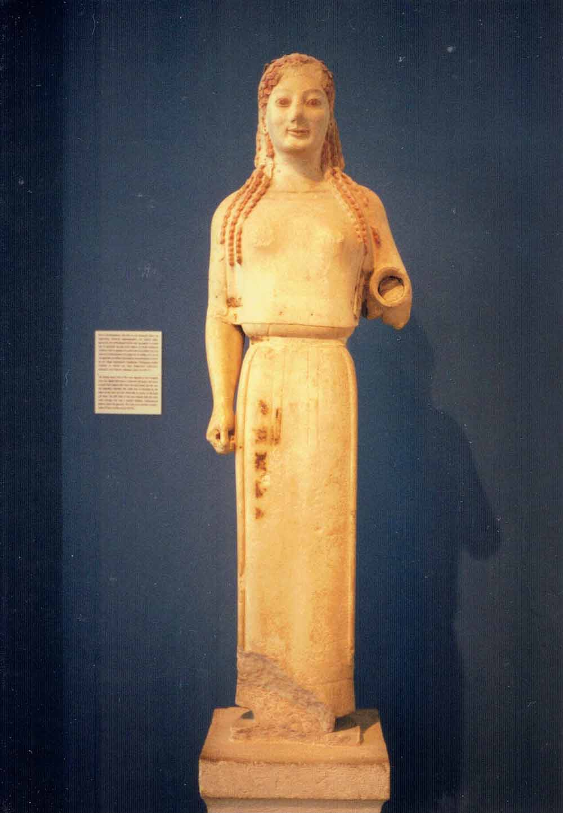
⑩アクロポリス博物館の少女像
⑪野外劇場跡
アクロポリスの丘の南斜面に、古代の階段式劇場が2つあります。この写真は、西側の音楽堂で、坂道を登って行く途中で見たのです。これは161年に大富豪ヘロディス・アティクスが寄付したものだそうです。彫刻を飾るための窪みが8ヶ所ついているとか。これは1951年に修復したそうです。東側はディオニソス劇場で紀元前6世紀に建てられ、1世紀に改築された古い劇場だということです。
翌日その近くを歩いたオリンピック・スタディアムは、紀元前4世紀に造った馬蹄形の競技場を、1895年第1回近代オリンピックに備え復元したものだそうです。
⑫国立考古博物館の墓碑
ホテルに帰って少し休んでから、この博物館をめざして北のほうへ1キロメートル半ほど歩いて行きます。ここには古代ギリシアを物語る石造彫刻や壷の類が充実し、大小様々な壷も沢山ありました。また墓石も多く、この写真は碑銘によると、亡くなった姉と弟の墓碑で、両親が詩をそえて建てたといいます。
女神ヴィーナスも数体あり、女神がサンダルを振り上げ牧羊神をからかう構図はキューピットを配して楽しげです。
治療の神アスクレピオスの完全な像もあります。死者の肖像も神像もキリスト教が破壊し排除したのです。2階には4,000年前の壁画もありました。
20日朝は、アクロポリスの丘の下を東から西に廻り、ゼウス神殿跡、オリンピック・スタディアム、植物園、シンタグマ広場などを歩いて、国立歴史博物館に行きます。ギリシアの歴史上の戦争や貴族の肖像画、議会の様子などが描かれています。11時過ぎホテルに帰り、ロビーでパンなどを食べてから、空港へ急ぎました。
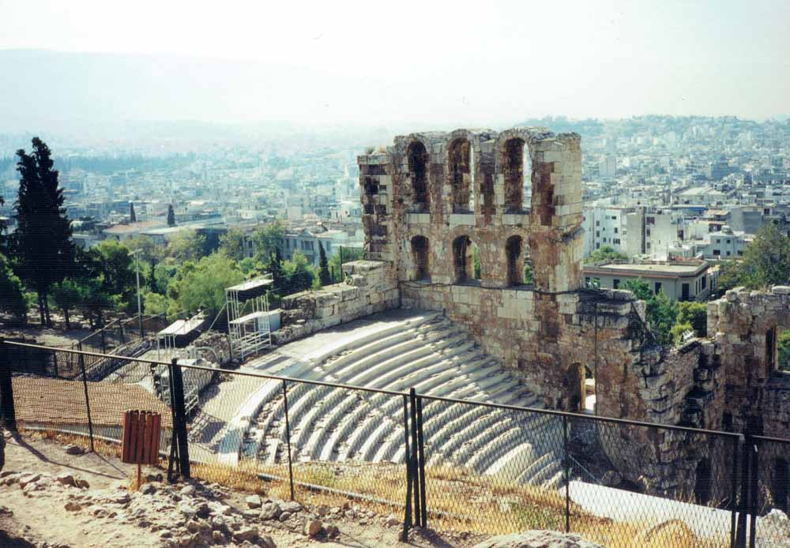
⑪野外劇場跡
⑫国立考古博物館の墓碑
Ⅳ スイス／チューリヒ、マッターホルン、ユングフラウ、ローザンヌ （8月20日～29日）
⑬スイスのマッターホルンとリッフェル湖
20日16時40分発のスイス航空SR303B便は、アテネから北西へ2時間半飛んで、18時10分にチューリヒ空港に着きました。電車で20時半頃に中央駅に着いて、前に泊ったリマットホフ・ホテルに戻りました。
21日朝早く、アルプスの山々の眺望を見に出かけます。列車に乗り3時間南下して、ブリーク駅に11時過ぎに着きました。駅の案内所で宿を探してもらって、出かけていくと、すぐに見つかりました。グッド・ナイト・イン（Good Night Inn）でした。それからツェルマット行きの電車に乗ると、14時半に終点に着きます。そこはマッターホルン（Matterhorn）の麓に広がる美しい村で、アルプスへの玄関口です。ここからゴルナーグラート行きの登山電車が出ていて、急勾配を登り、終点の一つ手前のローテンボーデンで降りて、岩山に登りました。
ここは3,100メートルの地点で、谷の下方の向かいに4,478メートルのマッターホルンが聳えています。鋭く厳しく美しいマッターホルンには、いつも雲がかかっています。下の方にはリッフェル湖（Riffelsee）が見えます。これは向かいのリッフェルホルン（2,927メートル）との間に広がっている小湖で、向こうのマッターホルンの峰が倒影しています。宝石のように光っている湖面に山の頂きや白い雲が映っています。
⑬スイスのマッターホルンとリッフェル湖
⑭クライネ・マッターホルン展望台の周辺
⑭クライネ・マッターホルン展望台の周辺
クライネ・マッターホルン（3,884メートル）へ行くロープウエーがあって、ここからそのゴンドラが小さく見えます。こちらは氷河になっていますが、岩山と白雪の量感は圧倒的です。赤土の山肌には処々に高山植物が小さい白や紫色の花をつけています。17時過ぎの電車に乗り、18時にツェルマットで乗り換え、20時頃ブリークの宿に帰りました。
⑮ユングフラウ（Jungfrau）などの名峰を望む
22日5時起床。7時過ぎに食堂で、ジュースやフレークなどを頂いてから、部屋へ帰っておにぎりを食べ、8時半にホテルを出ます。9時発の急行列車で北へ1時間、シュピーツで乗り換えると、東方のインターラーケン・オストまで20分です。ここはブリエンツ湖の西端で、2つの東西に長い湖の間の町です。
11時に登山電車に乗って、渓谷を遡っていくと、やがてウェンゲンあたりからユングフラウが見えてきます。11時45分にクライネ・シャイデックに着きました。ここから前方を見上げますと、緑の牧草地の上方に黒々とした岩山に白雪を頂くアイガー（3,970メートル）、メンヒ（4,099メートル）、ユングフラウが圧倒的な力で迫ってきます。
⑯ユングフラウの主峰
この名峰に近づきたく、更に登山電車でユングフラウヨッホ（Jungfraujoch）駅に向かいます。緑地からトンネルに入った電車は、2つの展望所の奥で停まります。その度に私たちは降りてアイガー北壁を見下ろし、またメンヒの裏の白雪の谷を見てから、終点の駅（3,454メートル）に着きました。ヨーロッパ一高いというこの鉄道駅は、冷蔵庫のように冷たく薄暗い。更に上の展望台（スフィンクス、3,573メートル）へ、エレベーターで昇るのは止めました。駅の上にはレストランがあり、そのベランダから雪の山々を眺めます。
外に出ると雪原です。目の前にユングフラウの主峰（4,158メートル）が聳えています。後ろには雪の峰の上に展望台の丸屋根が小さく見えます。雪原の下には、厚い氷をくり抜いた青白い回廊が延びて、小部屋には氷の熊や相撲取りの姿もあり、子供たちも面白そうに見ています。氷の床はつるつるです。空気のせいか気分が悪いような気もして、薬（六神丸）を飲みました。
⑮ユングフラウなどの名峰を望む
⑯ユングフラウの主峰
⑰トゥーン湖（Thunersee）とシュピーツ（Spiez）城
22日14時、ユングフラウヨッホ駅から下山の電車に乗ります。クライネ・シャイデックで乗り換え、グリンデルワルトでまた乗り換えて、16時半にインターラーケンに戻りました。そして39分発の列車（IC）に乗り、シュピーツに17時直前に着きます。ここは中世の雰囲気を残すきれいな町で、駅前のテラスに出て見ると、眼前にトゥーン湖が広がり、湖畔にシュピーツ城も見えます。階段を上って行くと町の眺望も良く、また絶景の山々を仰ぎ見るのです。
18時直前の列車に乗るまで構外のレストランで一休みします。それから車窓の風景を楽しみながらブリークに着いたのは19時頃でした。近くのレストランで夕食とします。暮れていく夕空の下で炒めご飯と魚料理をいただきました。
⑱ローザンヌ（Lausanne）大学
8月23日朝、ブリークのホテルを出てタクシーで駅に向かい、10時半の急行に乗ります。西へ西へと列車は山々を後にして進み、2時間後に文教都市ローザンヌに着きました。去年もここのローザンヌ大学で小学会があったのですが、この度は（IABS）です。多くの学者が世界中から集まるので、ホテルも何ヶ所かに分けられています。
私たちの宿はレマン湖に近いホテル・ジュノテル（Hotel Jeunotel）でした。そこの237号室は割安ながら書棚や戸棚、机、冷蔵庫もついています。外国の学者さん達にも会います。バスと電車を乗り継いで大学に行きました。旧大学は都心にある重厚な建物でしたが、こちらは郊外に新たに建てられた、数棟からなる外観が簡素な大建築物です。会場の受付に行くと、去年世話になった佐藤直実さんがいて、皆と歓談しています。またの再会を喜びました。
⑰トゥーン湖とシュピーツ城
⑱ローザンヌ大学
⑲グリュイエール（Gruyeres）古城
24日、学会が始まって、夫は大学に行きました。
25日の朝は、2人で歩いて大学まで行きます。レマン湖畔の波打ち際の景色を見ながら歩くと35分で着きました。私は電車で街に出て買い物をし、バスでホテルの近くで降ります。宿の入り口近くに小さい博物館があって、ローザンヌの自然史を中心に展示し、ビデオも流していました。その日、夫は会食があって、20時ごろ帰ったのですが、夕食後湖の方へ散歩に行くと、若者たちの集いがあって賑やかでした。
26日の午後は、イクスカーション（遠足）です。12時に大学に行くと、2台のバスが用意されていて、私たちは「チョコレート工場とグリュイエール古城行き」のバスに乗ります。雨の中を走行して、ネッスル工場でチョコレートを試食したりしてから、牧畜とチーズの里グリュイエールに向かいます。ここはローザンヌから40キロメートル東の町で、小高い丘におとぎの国のような古城があります。12世紀に建てられたという城の博物館を廻ります。その夜19時からのディナー・パーティーでは、内外の学者達と歓談しながらご馳走になって、バスで22時過ぎに宿に帰りました。
⑳レマン湖（Lac Léman）に遊んで写真を撮る
28日は学会の最後の日で、14時に閉会式がありました。18時からはレマン湖周遊の宴会です。夫がホテルに帰ってから一緒に出かけます。途中オリンピック博物館に入ります。聖火トーチやメダルなど資料が並んでいました。
レマン湖は東西に長い湖で、北岸はスイス、南岸はフランスです。船はローザンヌのウッシーから出港して、モントルー、シヨン城などを廻ります。別れを惜しんで歓談をし、豪華な食事と夜景を楽しんだ3時間でした。
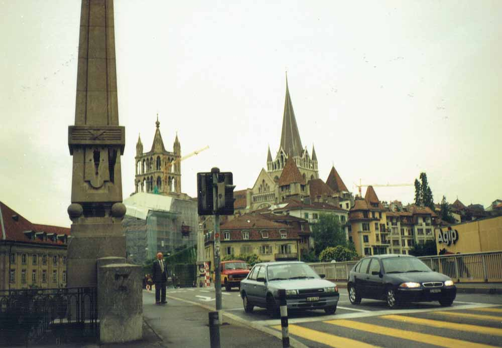
⑲グリュイエール古城
⑳レマン湖に遊ぶ
Ⅴ イタリア／フィレンツェ、ヴェネツィア （8月29日～9月1日）
㉑フィレンツェのドゥオモ（Duomo）
29日朝、ローザンヌ駅発6時半の列車で今度はイタリアに行くのです が、間違って普通列車に乗ったので、ブリークで次の急行列車に乗り換えて、ミラノに着いたのは10時50分でした。20分後にまた乗り換えて、フィレンツェ中央駅に着いたのは14時近くです。近くのホテル（Hotel Delle Nazione）に荷物を置いて出掛けます。この町はイタリア・ルネッサンスの中心地というだけに、歴史を感じさせる建造物も多いのですが、スイスの町ほどは綺麗ではなく、家々の窓辺に花もありません。
街のハイライトは駅から歩いて10分のドゥオモです。14世紀に完成した大理石の荘厳な聖堂で、高さ114メートルの大円蓋には96メートルまで上れるとか。また隣接するジオットの鐘楼は84メートルあるというのですが、私たちは入れません。ドゥオモから南に向かい、アルノ川にかかる橋（サンタ・トリニタ）を渡り、どんどん歩いてみますが、暗くなってきたので、バスでドゥオモまで戻り、中華料理店でご飯とおかずを買って、宿に帰りました。
㉒シニョリア広場（Plazza della Signoria）
30日は、駅前のサンタ・マリア・ノヴェッラ教会を訪ねてからアルノ川の河畔を歩きます。今度は最も古いヴェッキオ橋を渡ります。この橋には店が並んでいます。そこから近代美術館や陶器美術館、パラティーナ美術館があるピッティ広場の方に向かいますが、この日は月曜でどこも休館なので引き返して、シニョリア広場に出ます。ここは昔、政治の中心だったとか。彫刻が多く、写真中央のネプトゥヌス（水神）の噴水の周りにも英雄の騎馬像や、神々の彫像があります。ここにはルネッサンスの至宝を集めたウフィッツィ美術館があるのですが、月曜日なので閉館中です。広い広場には、太めのブロンズ像が沢山立っていました。
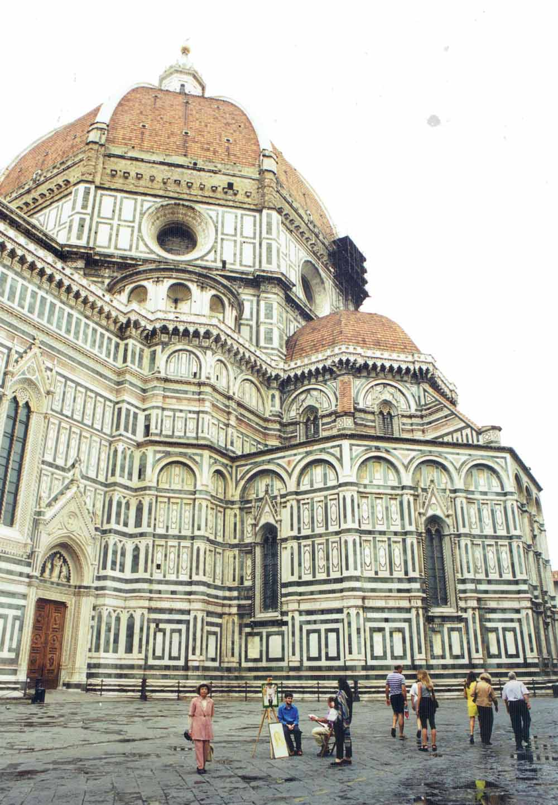
㉑フィレンツェのドゥオモ
㉒シニョリア広場
㉓ヴェッキオ宮殿（Palazzo Vecchio）とダヴィデ像
シニョリア広場にあるヴェッキオ宮殿は14世紀初頭の建物で、鐘楼の高さは94メートルあり、すらりと美しく伸びています。16世紀になって、内部に大々的な装飾が加えられたのだそうです。現在は一部が市庁舎で、美術館にもなっています。
この建物の正面に立っている白い大理石の男性像は、ミケランジェロの有名なダヴィデ像です。ただしこれは模刻品で、本物は1キロメートル北にあるアカデミア美術館に移されたそうです。ミケランジェロは1501年から3年かけて、4メートルの青年の裸像として製作しました。自由と正義、自治を象徴するモニュメントとして、最初この広場に置かれたということです。
㉔ヴェネツィアのサン・マルコ（San Marco）寺院
30日、フィレンツェ発11時20分の列車で、北東に水の都ヴェネツィア（ヴェニス）へ向かいます。メストレ駅に14時に着きました。ホテル・ヴィエンナ（Hotel Vienna）を探しあてて、そこに荷物を置いてから、電車に乗って、サンタ・ルチア駅に向かいます。左右に海に浮かぶ小船などを眺めながら5分ほどで着きました。駅前のサンタ・マリア教会に入って見てから、橋を渡って、曲折のある小路や建物の中の通路をサン・マルコという標識を頼りに歩いて行きます。
やがてS字状に大きく曲がっている運河があって、アーチ型の大きい橋を渡ります。これがリアルト橋です。更に小路をたどって、ようやく大寺院の前の広場に出ます。聖マルコを祀るこの寺院は9世紀に建てられてから、何度か改築が重ねられました。寺院の正面には大理石で彫刻された入り口が5つ並び、中央の大きいアーチの上には4頭の馬のブロンズが立っています。写真は、左の建物がサン・マルコ寺院で、右はヴェネツィア共和国の政庁だったドゥカーレ宮殿（今は博物館）です。
㉓ヴェッキオ宮殿とダヴィデ像
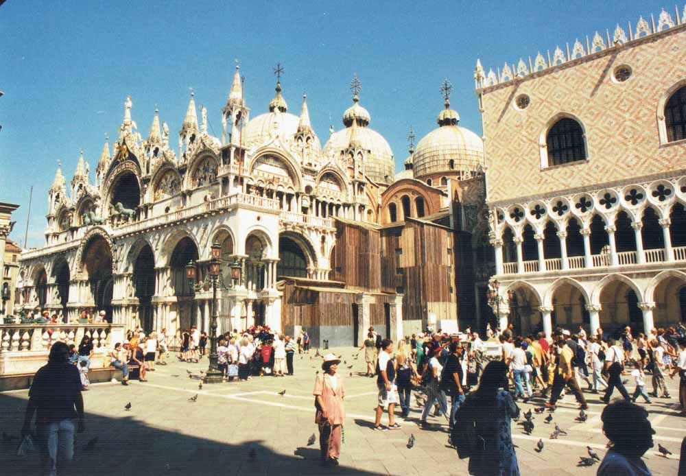
㉔サン・マルコ寺院（左）とドゥカーレ宮殿（右 ）
㉕サン・マルコ広場の鐘楼より街を望む
サン・マルコ寺院の右手前にレンガ造りの大鐘楼が立っています。15世紀に建てられたという鐘楼は、1902年に倒壊して、その後に再建されたものだそうです。高さ100メートル近くまで、エレベーターで一気に上ります。料金は1人8,000リラ（15リラが1円で、533円）です。
この写真では手前がサン・マルコ寺院の5つの丸屋根、そして延々と連なる赤い屋根の家並みです。真っ青な海は洋々として、東西貿易による海運業で繁栄した町の歴史を思わせます。ヴェネツィアは周囲11キロメートルの小さい島で、入り組んだ細い路地と小さい運河が島中を走っています。車がないので静かで情緒ある町ですが、時に水かさが増すと地面が濡れ危うくなる時もあるそうです。帰りは水上バスでサンタ・ルチア駅まで帰りました。その料金6,000リラ（400円）は安いです。19時半ごろ、駅前の中華レストランで食事をしてから、ホテルに帰りました。
㉖サン・マルコ寺院と美術館など
31日は10時過ぎの列車に乗って、サンタ・ルチア駅に行きます。前日と違う道を通り、リアルト橋で特産のマスケレット（お面）やムラーノガラスのペンダントなどを買います。またサン・マルコ寺院にやってきました。中央祭壇の後方には宝石類が散りばめられた豪華な祭壇画があります。丸天井のモザイク画は素晴らしい。教会音楽が奏でられ荘重な雰囲気です。博物館になっている上階に上り音楽演奏を聴きながら一巡して馬の像などを見ます。
また向かいの美術館で18,000リラ（1,200円）を払うと、7ヶ所を廻る券が買えました。そこの絵画を見てから広場の椅子に休んで軽食をとり、それからドゥカーレ宮殿の博物館に入り、大広間の大画面などを見て回りました。次にアカデミア橋を渡って入ったアカデミア美術館では、イタリア美術の傑作を見ます。
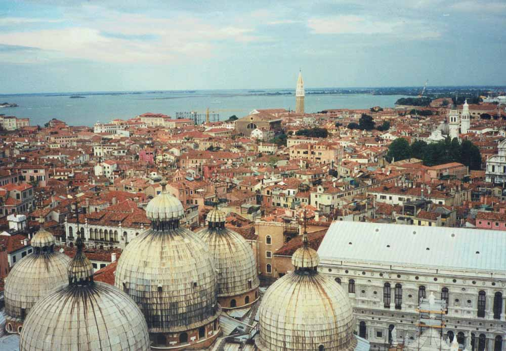
㉕サン・マルコ広場の鐘楼より街を望む
㉖サン・マルコ寺院の内部
㉗ヴェネツィアの運河
この写真はアカデミア橋からサン・マルコ運河の方を撮った風景です。向こうに見える教会がサンタ・マリア・デッラ・サルーテ教会です。ヴェネツィアの交通機関はすべて、水上に浮かんでおります。定期バスのように進む船が水上バスで、モーターボートはタクシーに相当します。それにゴンドラです。前日は水上バスに乗ったのですが、サン・マルコ広場の近くからサンタ・ルチア駅前まで1人6,000リラです。
この日は帰りも歩いて駅まで行くことにしました。アカデミア橋を渡って北西へ小路を通り、教会や商店を覗きながらローマ広場に出、また橋を渡ってサンタ・ルチア駅まで出ます。その近くで中華料理を頂き、ご飯と玉子を買ってから、電車でメストレ駅に行き、近くのホテルから、荷物を受け取って、21時半発ブダぺスト行きの列車に乗りました。
Ⅵ ハンガリー／ブダぺスト （9月1日～2日）
㉘ブダペスト（Budapest）の鎖橋くさりばし
9月1日、前夜出発した夜行列車は北東のハンガリーに向かいます。途中スロベニアとクロアチアの両国を通るので、その都度パスポートと切符の検査があって、不足料金は車内で精算されます。朝日がさしてきましたが霧の中で寒いのです。8時近く長い停車があり、その後持参の食料で、朝食とします。
11時50分頃ようやく首都ブダペスト東駅に着きました。歩いて10分足らずの所にグランドホテル・ハンガリアがあります。そこの721号室は南向きの広くてよい部屋です。
午後に街を見物しながら、西に向かって行くと、ドナウ川が見えてきます。鎖橋が堂々とかかっていて、2頭のライオン像が見張りをしています。ドナウ川を挟んで、西側がブダ、東側がペストですが、1849年にこの橋ができてから一つの町となったそうです。
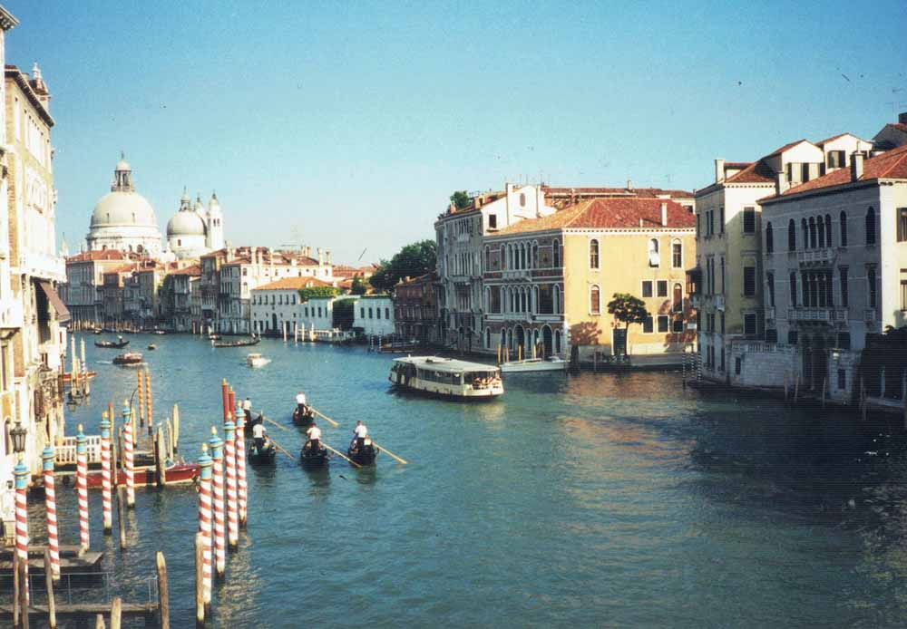
㉗ヴェネツィアの運河
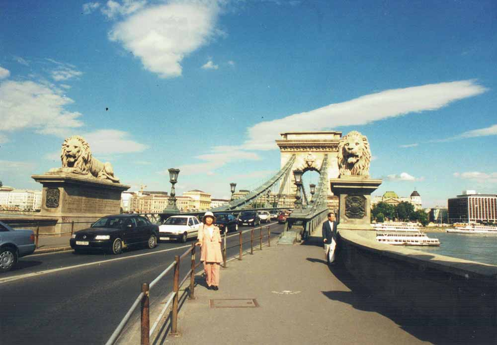
㉘ブダペストの鎖橋
㉙ハンガリー国立美術館の絵
私たちはペスト側の新市街から、鎖橋を西側のブダ側に渡りケーブルカーで小高い丘に登ります。丘の左側に見える王宮は13世紀に建てられましたが、何回も破壊されて現在の建物は1950年代のものだそうです。図書館と博物館からなっていますが、中央のエレベーターで上った所にあるのが国立美術館です。丸いドームが目印で橋上からもよく見えます。ここには中世から現代に至るハンガリーの絵画が展示されていました。
写真の絵はこの国で最も好まれた画家カーロイ・ロッツ（Károly Lotz, 1833-1904）の女性像の一つです。「白衣のコルネラ・ロット」とありましたが、優雅な貴婦人像です。その他、ミハーリー（M. Mihály）の風景画やクラフト（P. Krafft）の戦闘場面の絵なども印象 的でした。1957年博物館から独立し、自国の美術が重視されたそうです。
㉚マーチャーシュ聖堂（Matyas Templom）
美術館を出て北の方へ歩いて行くと現代美術館や王宮劇場があり、さらに進むと高く聳える教会が見えて来ます。マーチャーシュ聖堂です。カラフルなモザイク模様の屋根と細かく装飾された石の塔が特徴的です。1470年マーチャーシュ王の命令で、88メートルの尖塔が増築されたそうで、歴代の王の戴冠式など重要な行事も行われるそうです。
この教会は1541年ブダがトルコに占領されると、イスラム教のモスクに改装され、1686年にトルコ軍が撤退してからはカトリック教会に戻り、さらに19世紀末、現在のゴシック様式になったそうです。正面からは地下の宝物室へ行けます。この教会の前では女子大生達が音楽祭の切符を売っています。その夕べにも音楽会があるといって、分かりやすい英語で誘われました。行きたかったのに、結局は行けませんでした。
㉙ハンガリー国立美術館の絵
㉚マーチャーシュ聖堂
㉛漁夫の砦とりで
この教会の東側に向かいますと、川に面してこの砦があります。これは古い城壁の上に1905年に完成したという白い石灰岩で出来たとんがり屋根の5つの丸塔と、ひときわ高い尖塔（右）が回廊でつながっています。この城塞をドナウの漁師組合が守っていたという伝説から、この名がついたと言われます。この回廊の屋上から眼下にドナウ川とペストの街がよく見えます。写真の真ん中の騎馬像は、ハンガリー初代の王イシュトヴァーン（10〜11世紀）の像です。
18時半頃からバスを待って、19時すぎに街の中心部に出ました。それから歩いて中華料理店を探します。日本を知っているという若い女性に案内されて、中国城大酒店に行きました。ホテルに帰ってBBCのニュースを見ます。
㉜ブダペスト国立博物館
2日、7時過ぎに食堂に入るとご馳走がいっぱい並んでいます。持参の醤油をきゅうりやトマトなどにかけて頂きます。9時前にホテルを出、バスに乗って国立博物館に行きますがまだ開いていません。銅像のそばにいた若者たちに聞くと、10時開館ということです。そこで西の川端の方に出てみます。またバスに乗って戻ってきて、入館しました。
この博物館は19世紀の初めに開設されましたが、第2次大戦後、社会主義になったので、貴族たちの収集品が国家財産となり、収蔵品が多くなりました。そこで、ハンガリー美術は旧王宮に移り、ここには古代エジプトやギリシア、ローマの彫刻、そして、19世紀までの各国の美術品が多いのです。
お昼近くホテルに戻り、荷物をまとめて駅に急ぎます。12時半のウィーン行きの列車に乗り、西方へと向かいます。国境を越える14時半ごろ、パスポート検査がありました。
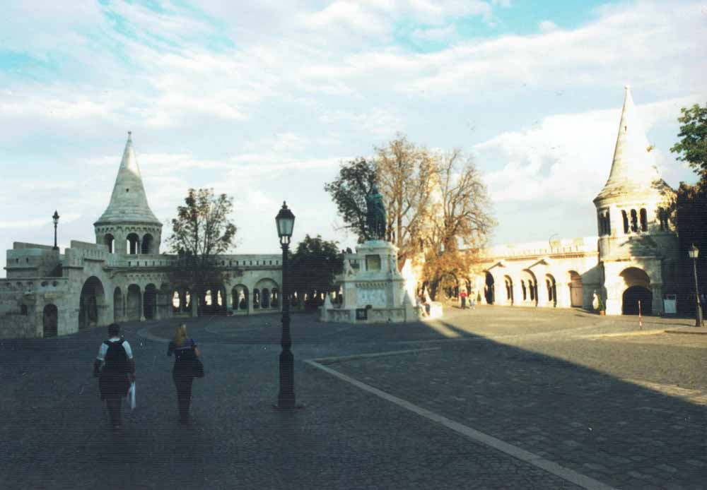
㉛漁夫の砦
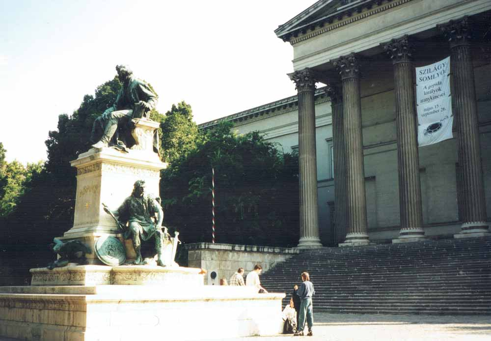
㉜ブダペスト国立博物館
Ⅶ オーストリア／ウィーン （9月2日～5日）
㉝ウィーン美術史博物館（Das Kunst Historische Museum）
2日15時半、ハンガリーから列車でオーストリアのウィーン西駅に到着しました。雨の中をホテル・ローゼン・ブルゲルラント（Hotel Rosen Burgerland）を探しましたが中々見つからず、タクシーに乗ったら、近いが一方通行だからと一周して駅のそばのホテルの前に下ろされました。日本人観光客もたくさんいます。やっと17時ごろ、そこの216号室に落ち着きました。一休みの後、近くを散歩し、レストランで食事をして21時前に帰ります。
3日夫は具合が悪いと、朝食後もベッドに入ります。やっと起きて、11時に地下鉄の切符売り場で1日有効分を買いました。すぐに乗って、フォルクスシアター（Volkstheater）で降り、美術史博物館に行きます。ここは19世紀末開館しましたが、中の美術工芸品は13世紀から700年間、ヨーロッパ各国の政治・文化に関わったハブスブルク家や歴代皇帝達によって積極的に収蔵されたもので、よく充実しています。
㉞同博物館の美術品
この博物館の1階は主に古代エジプト、ローマ、ギリシアの工芸品、2階は現代までの絵画ギャラリ、3階は彫刻、貨幣やメダルなどのコレクションです。この写真の上方にクリムトの壁画が見えます。大理石の柱と金箔を施した柱頭、それにアーチの縁とで構成された空間に描いたものです。右の「エジプトの美術」は大胆な裸身、左の「ギリシア古典美術」は赤い衣装のパラス・アテナ女神で表されます。
また、スペインの宮廷画家ベラスケスはマルガレーテ王女の肖像画を描き、後の夫君レオポルト1世に届けたので、彼女の絵が何枚かあります。その他ラファエロの聖母子像、ブリューゲルの村の謝肉祭を描いた絵など印象的でした。
㉝ウィーン美術史博物館
㉞同博物館の美術品
㉟シュテファン（Stephan）大聖堂
17時頃博物館を出て、歩いてウィーンのシンボルのシュテファン大聖堂に行きます。旧市街の真ん中に13世紀後半から300年かけて建設されたこの国最大の教会です。案内書では、南塔は137メートルで、347段の階段で73メートルまで、北側の鐘楼にはエレベーターで60メートルのテラスまで上れるそうですが、やめました。屋根は大きく、色瓦で、美しく模様を描き、身廊の長さは107メートルもあるというゴシック建築です。この聖堂はキリスト教の最初の殉教者シュテファンを守護聖人としているとか。
寺院の前でヴァイオリンひきがクラシックを演奏していて、みな聞き入っています。ガード下などでも生演奏が聞かれます。そこには大抵お金入れが用意されています。シューベルト、ベートーベン、モーツァルト、ハイドンなどを生み育てた町です。
㊱シュテファン通りの馬車行列
優雅な気分で、大聖堂のまわりを歩いていたら、急に異様な匂いがします。馬車がどんどんやって来るのです。そのうち、乗らないかと声をかけてくる者もいましたが、気分が乗らないので、ノウと言いました。この町は古典的な馬車も似合うのでしょう。地図を見ると、近くに乗馬学校があるのです。
それから、バスに乗り、ウィーンの西方に行きます。巨大な塔をもつヴォティーフ教会（Votivkirche）に来ました。19世紀末ヨーゼフ1世が、暗殺を免れたことを感謝して建設させたとか。
この辺りは1888年に完成したウィーン大学や壮麗な国会議事堂、市役所などギリシア建築を思わせる建物が多いのです。電車を乗り継いで西駅に着き、中華レストランで夕食とし、ホテルに帰りました。
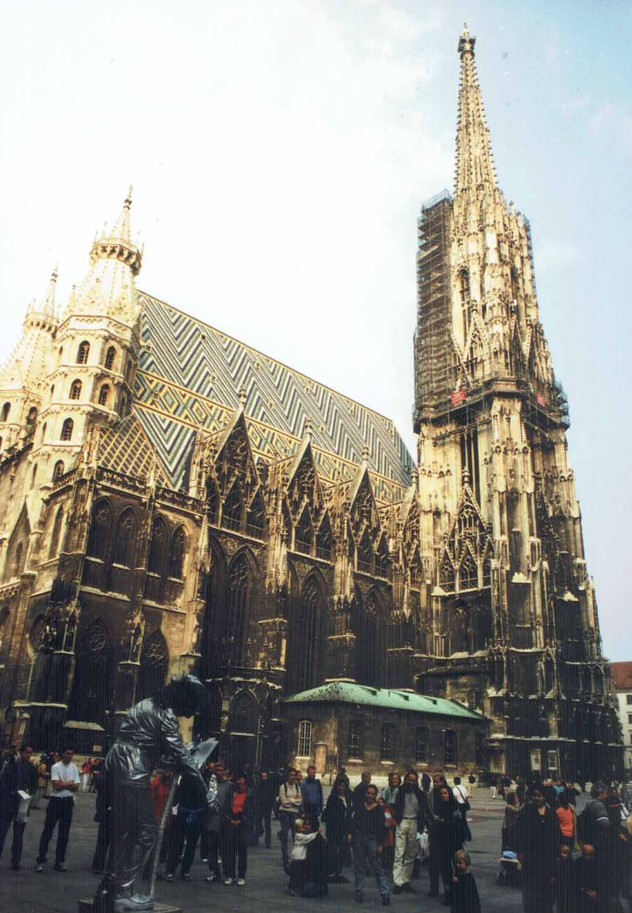
㉟シュテファン大聖堂
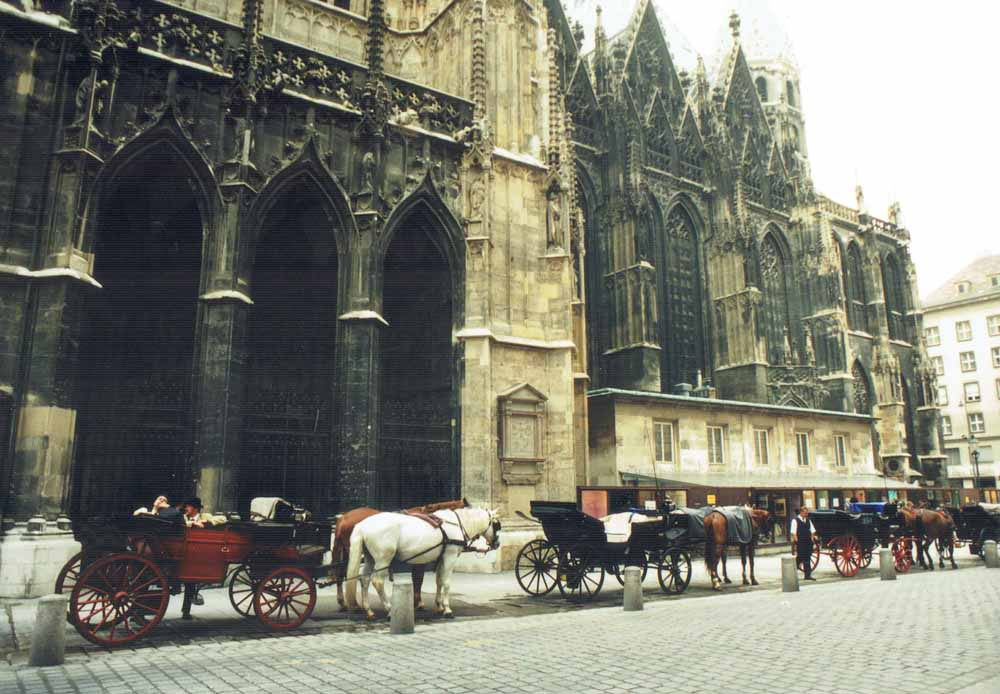
㊱シュテファン通りの馬車行列
㊲ベルヴェデーレ上宮（Belvedere - Oberes Belvederem／オーストリア絵画館）
4日の朝、10時すぎにホテルを出て、バスで南駅まで行きベルヴェデーレ上宮に向かいます。途中一青年に日本語で話しかけられます。彼は東北大学の大学院で国文学を学んだとか。この宮殿は、トルコ軍の掃討戦などで活躍したプリンツ・オイゲン公の夏の離宮として建てられたそうです。この建物の上方の周りにも彫像が並んでいます。入り口ではスフィンクスやライオンが見張っていました。
現在上宮は近代絵画を展示するギャラリになっています。クリムトの「アダムとイヴ」やマカルトの寓意画に驚きました。2階の大広間には天井いっぱいにオイゲン公の数々の戦功を表わす絵が描かれています。
㊳同宮殿の庭園とスフィンクス
上宮の広い庭園の向かいを下ると下宮があります。上宮が公賓をもてなす宮殿だったのに対し、こちらは、親しい友人と過ごすような所とか。今は美術館になっています。上宮と下宮の間の庭園の四隅には写真のような大きいスフィンクスが置かれています。古代ギリシアの神話では、スフィンクスはライオンの胴体に人間の女性の頭と鷲の翼を持っているといいますが、これは顔も胸ももっと美しいのです。
この他、ウィーンには街のほぼ中央に13世紀から増築、改修してきた王宮（ホーフブルク）や、ハプスブルク家の夏の離宮シェーンブルン宮殿もあります。シェーンブルンには2004年8月31日にも行きました。そこの庭園と花園はみごとです。
ベルヴェデーレ宮から電車を乗り継いで、いくつかの美術館を見ますが、現代のものにはあまり感心するものがありません。ドナウ川を見てから西駅に帰り、ホテルの荷物を受け取ってから、やっとのところでスイス行きの列車に乗りこみました。
㊲ベルヴェデーレ上宮（オーストリア絵画館）
㊳同宮殿の庭園とスフィンクス
㊴スイスのルツェルン（Luzern）湖畔
4日夜21時半に出発した夜行寝台車はチューリヒに向かい、5日の朝6時20分に着きました。降りる前に渡された朝食券を持って駅の地下2階のレストランで、パン、バター、紅茶などをいただきます。8時半リマットホフ・ホテルに戻って来ました。預けていた荷物を受け取ると、初めて来た時に忘れてきた夫の下着類の袋が結んでありました。お湯をもらって、カップラーメンやパンを食べます。
11時半、ホテルを出て駅に行き、すぐ北側の国立博物館に入ります。昨年私が見たところです。次に16時の電車で西南のルツェルンに向かうと40分で着きました。アルプスの山々に囲まれた湖畔の町で、駅前のロイス川の向こうは旧市街です。まわりにきれいな美術館や教会が建っています。18時近くの列車で、ホテルに帰りました。
おわりに
第2回のヨーロッパの旅では、スイスの山々を間近に仰ぎ見ました。登山電車に乗って5,000メートル級の名峰を眺める地点で降り、見渡す限りの雄姿と清冽さに感動し畏敬しました。また、西洋文明の発祥地ギリシアやローマ、そしてフィレンツェやヴェネツィアを訪れ、古代とルネッサンスの文化にも触れ得たかと思います。あのギリシア・ローマの文化が、どうして滅ぼされてしまったのかは、謎のようです。
この8月にはギリシアでオリンピックが開かれて、現地では熱く燃えたようです。世界各国から大勢の選手たちが集まり、平和の祭典が繰り広げられるというのに、一方では湾岸戦争をはじめとし、いまなお収まらないイラク戦争などという現実を、どう解釈すればよいのでしょうか。極言すれば、人類がこれから生き延びられるかどうかという問題ではないでしょうか。
実は私どもは今年6月25日から7月9日まで15日間の「中国・パキスタンの旅」に行って来ました。葱嶺（パミール高原）から国境クンジュラブ峠を越えて、パキスタンに入ってガンダーラの遺跡を巡って来ました。昔法顯や玄奘がインドの仏典を求めて命がけで旅をしたシルクロードを、少しでも辿ってみたかったのです。
パキスタンをはじめ、一昨年に行ったウズベキスタン、カザフスタンなどシルクロード沿いの各国は、イスラム圏なのですが、住民はみんな優しいし、ガイドさんたちは教養があり、日本語で丁寧に案内してくれるのです。アメリカのようにテロには屈しないと言って、報復また報復では永久に平和は訪れない。不殺生・寛容の理念がほしいと思います。
この旅行記は、春には大体できていたのですが、6月のシルクロードの旅と8月12日から9月13日までのモスクワとヨーロッパの旅行で、完成がだいぶ遅れました。